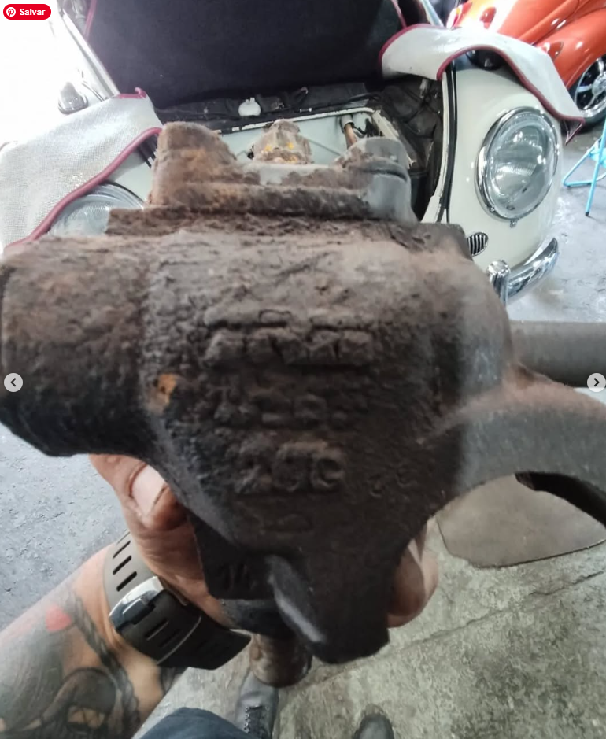
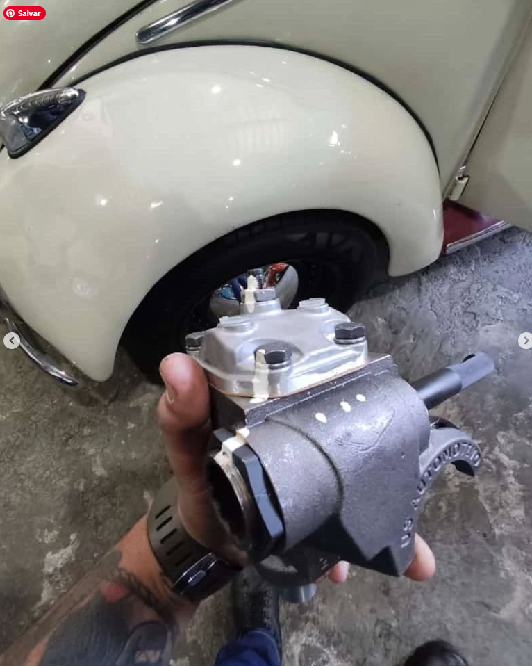
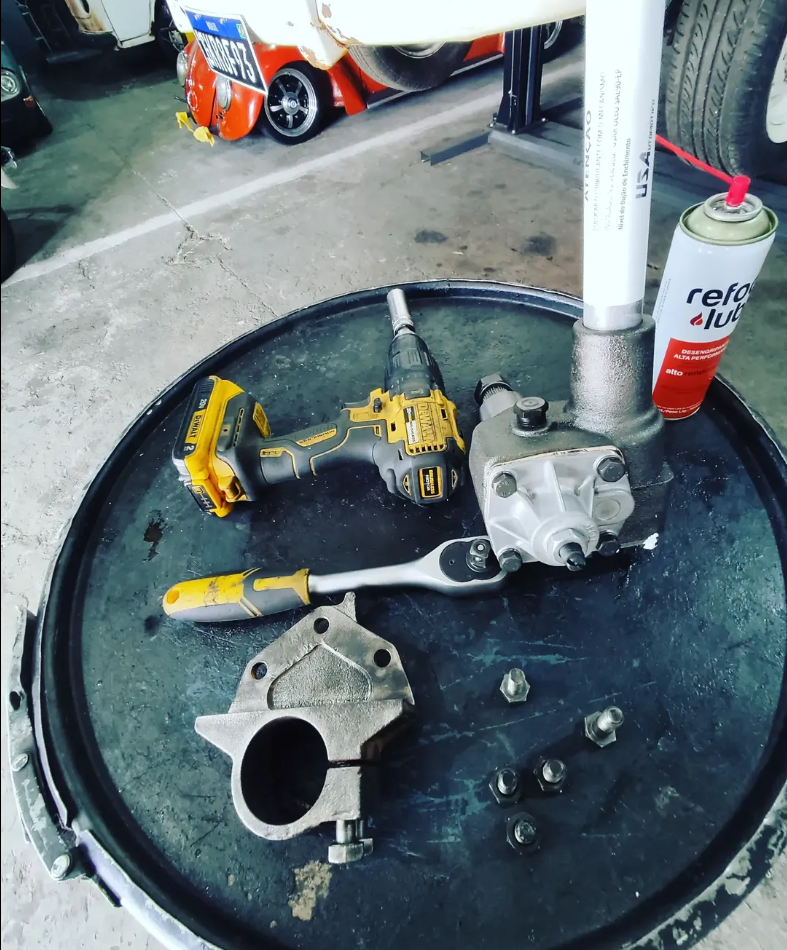
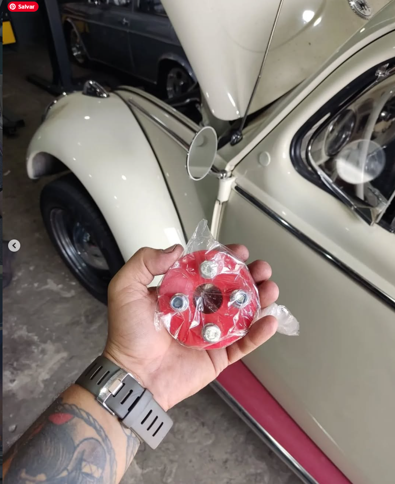
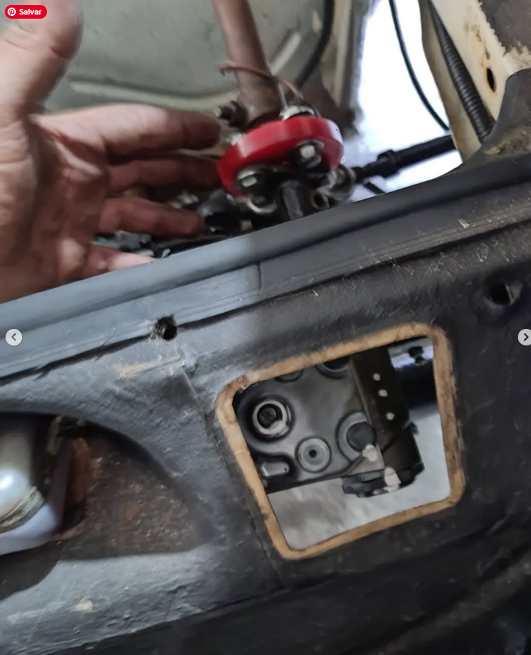
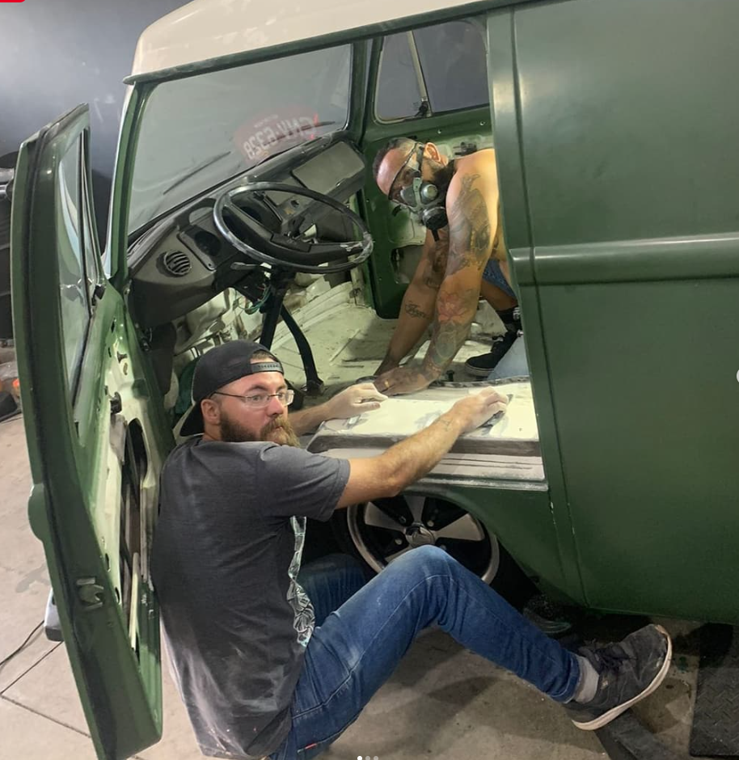
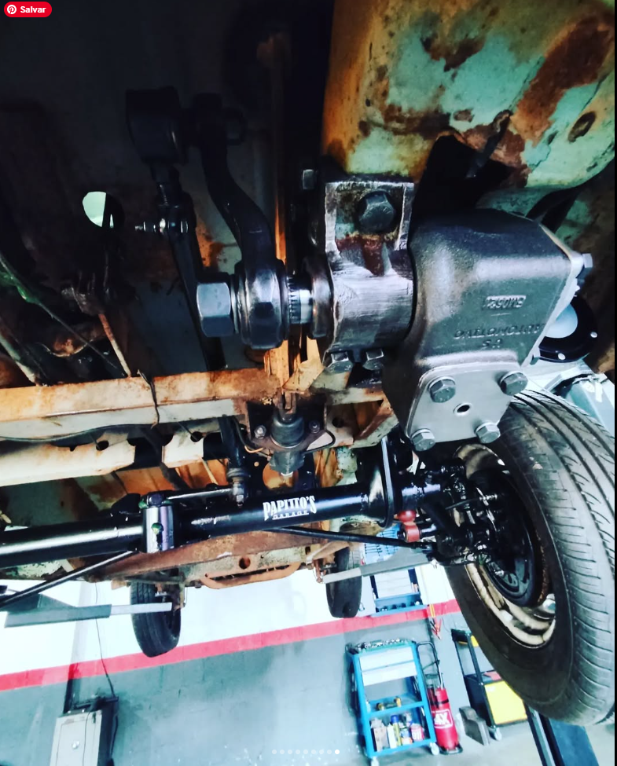

O Fim das Folgas
Pilotar um VW antigo não precisa ser uma luta constante contra o volante. Na Papito's Garage, transformamos o sistema de direção original em um conjunto de alta fidelidade.

Realizamos a recuperação técnica de setores e caixas de direção, devolvendo a suavidade original, ou partimos para o upgrade de performance com a instalação de sistemas de pinhão e cremalheira.

Trabalhamos com colunas escamoteáveis, terminais de direção de alta resistência e amortecedores de direção dimensionados para garantir que seu traçado seja limpo e seguro, mesmo em altas velocidades.

Serviços Especializados:
- ✔ Recuperação de caixa de direção original
- ✔ Kit de pinhão e cremalheira (Upgrade)
- ✔ Coluna de direção articulada e escamoteável
- ✔ Instalação de amortecedores de direção de performance



